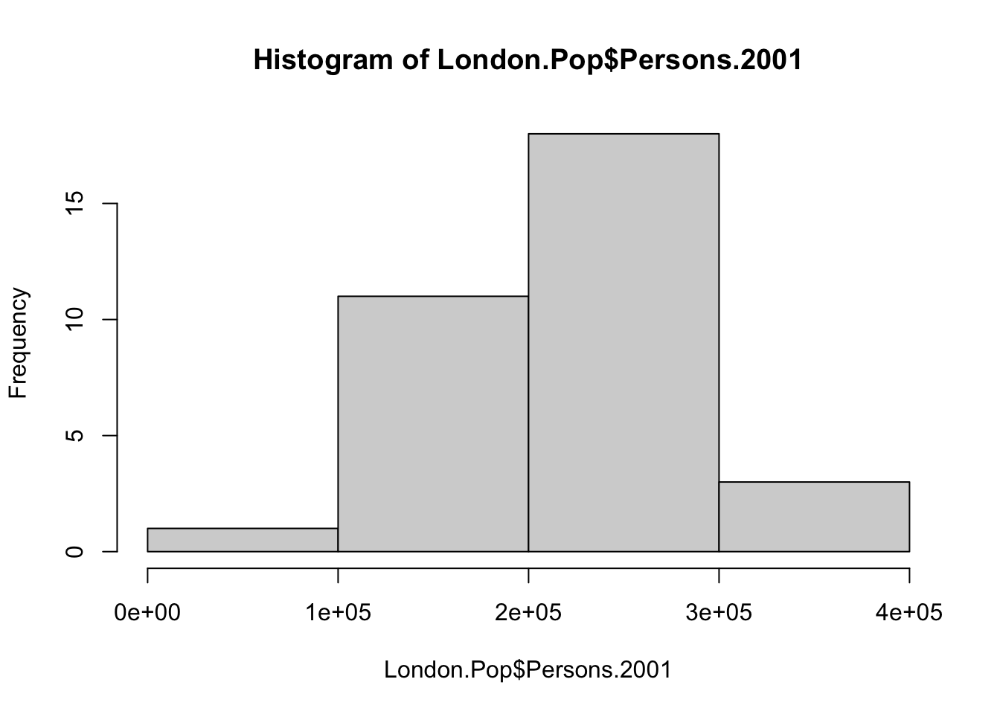
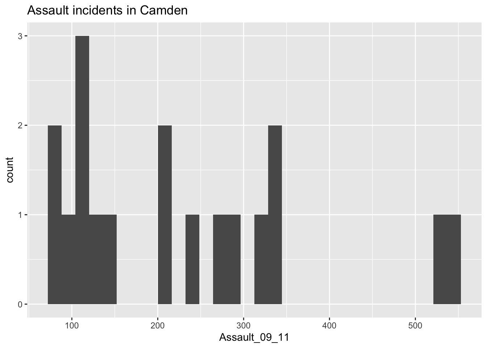

Week 3 Examining data II
3.1 Introduction
Welcome to your third week of Introduction to Quantitative Research Methods. This week we will focus again on examining data, however, this time we will focus on data visualisation. For the tutorial we will reuse both data sets that we used over the last week. Alright, let’s go and have some fun.
3.2 Data visualisation
Data visualisation is the representation of data in a visual format. This could be a graph, chart, map, or other visual format. Sometimes the visualisation includes every data point, for instance in case of a scatter graph, or sometimes it shows some type of statistical summary, for instance in case of a boxplot. Sometimes visualisations are very descriptive and only include the raw data, whilst other times they are the product of a sequence of transformations and analyses. No matter what, the main goal of data visualisation is to help you interpret the underlying data. Data visualisation is therefore used when cleaning your data, exploring your data, looking for outliers and unusual values, identifying trends, identifying clusters, uncovering patterns, and presenting results.
Before we move to R and start creating some data visualisations ourselves, a good example, albeit slightly dated, of why data visualisation is so important, is given by the late Hans Rosling. He was a Swedish physician and statistician who was very passionate about data visualisation. As he says in the video: “Having the data is not enough. I have to show it in ways people both enjoy and understand”.
Video: Data visualisation II
For this tutorial we start by using the London.Pop object again that we created during last week’s tutorial. You may still have it loaded into your R workspace if your RStudio Server session is still active.
At this point, you should be able to set your RStudio Server, upload data to it and set the directory etc., if you struggle with setting up your working directory and you need a reminder, then have a look at how we set this up in our first week!
# Load data into RStudio. The spreadsheet is stored in the object called 'London.Pop'
London.Pop <- read.csv("London historical population dataset.csv")Now are data loaded again, we can start by recreating a simple scatter graph in a similar fashion as we did last week using the plot() function.
# make a quick scatter plot of two variables of the London population data set
plot(London.Pop$Persons.2001,London.Pop$Persons.2011)
Ask yourself these questions
- What do the points in the graph represent?
- Do you think there is a relationship between the population in London’s boroughs in 2001 and the population in London’s boroughs in 2011? If so, what is this relationship?
- How can we add a title? How can we change the colour of the points?
Another common method to visualise your data is by using a line chart. Line charts are particularly useful when you want to compare change over time, for example. A line chart can also be relatively easily created in R. Let’s try it by charting the population size over time for one of London’s boroughs: Hackney.
# select the data for the borough of Hackney
London.Hackney <- London.Pop[London.Pop$Area.Name=='Hackney',3:24]
# inspect the result
London.Hackney## Persons.1801 Persons.1811 Persons.1821 Persons.1831 Persons.1841 Persons.1851 Persons.1861 Persons.1871 Persons.1881 Persons.1891 Persons.1901
## 12 50000 64000 80000 105000 128000 170000 218000 261000 329000 372000 389000
## Persons.1911 Persons.1921 Persons.1931 Persons.1939 Persons.1951 Persons.1961 Persons.1971 Persons.1981 Persons.1991 Persons.2001 Persons.2011
## 12 385000 379000 364000 332000 265000 257522 220000 180434 162772 202825 246270The crucial part of the code snippet above is what’s included in the square brackets [ ]. We are subsetting the London.Pop object, but instead of telling R what column names or numbers we require, we are requesting all rows in the Area.Name column that contain Hackney. Hackney is a text string so it needs to go in speech marks '' (or "") and we need to use two equals signs == in R to mean “identical to”. A single equals sign = is another way of assigning objects or saying “equal to”. Although = works the same way as <-, it is much less widely used for this purpose because it is also used when parameterising functions.
We should now be left with a dataframe that only contains one row of data: the data for the borough of Hackney. This does raise a question: how do we include all the variables into our plot as all our data are spread out over different columns (i.e. Persons1801, Persons1811, etc.)? Ideally we would flip the data set around so that all the data (i.e. Persons1801, Persons1811, etc.) would be in one column. Well, luckily we can actually do that by transposing our data set. Transposing is a mathematical operation to flip a matrix over its diagonal. Effectively, it turns rows into columns and columns into rows. In R we can do this using the t() function.
# flip the rows and columns of our data set
London.Hackney.t <- t(London.Hackney)
# inspect the result
London.Hackney.t## 12
## Persons.1801 50000
## Persons.1811 64000
## Persons.1821 80000
## Persons.1831 105000
## Persons.1841 128000
## Persons.1851 170000
## Persons.1861 218000
## Persons.1871 261000
## Persons.1881 329000
## Persons.1891 372000
## Persons.1901 389000
## Persons.1911 385000
## Persons.1921 379000
## Persons.1931 364000
## Persons.1939 332000
## Persons.1951 265000
## Persons.1961 257522
## Persons.1971 220000
## Persons.1981 180434
## Persons.1991 162772
## Persons.2001 202825
## Persons.2011 246270# plot the size of the population in the London borough of Hackney over time
plot(London.Hackney.t, type='b')
Ask yourself these questions
- Why did we slice our data frame when we selected the data for Hackney (i.e.
London.Pop[London.Pop$Area.Name=='Hackney',3:24]) and did we not simply keep all columns? - How can we change the colour of the line and points in our graph?
Note
You may be wondering why the first column of the transposed dataframe does not have a column name and why the column with the data of the transposed dataframe is called 12. The reason for this is that the t() function flips the row and column indices around. The column indices (i.e. in this case the column names) now become row names and the row indices (i.e. in this case row numbers) now become column names (the data for Hackney can be found on row number 12 in the original data set). However, do not worry about this too much for now.
Last week you also got introduced to the box and whisker plot. A box and whisker plot is a method for visualising your data by their quartiles with the whiskers (the lines extending from the box) incidating the variability of the values outside the lower and upper quartile. Typically outliers are plotted as individual points. Let’s go back to our full data set and make a boxplot for one of the population variables in the London population data set.
# make a boxplot of one of the variables in the London population data set
boxplot(London.Pop$Persons.2001,horizontal=TRUE)
The standard plot() and boxplot functions offer a huge number of options for customisation. A useful option is to combine multiple graphs into one figure to allow for easy comparison. We can do this by setting some of the graphical parameters and requesting that our graphs are plotted together.
# specify that we want an output consisting of two rows
par(mfrow=c(2,1))
# make a boxpot of one of the variables in the London population data set
boxplot(London.Pop$Persons.2001,horizontal=TRUE)
# make a boxplot of another variable in the London population data set
boxplot(London.Pop$Persons.2011,horizontal=TRUE)
Note
The specification given to the par() function only works once: it is not an option that you switch on and once the option is switched on all plots will be plotted together. This also means that if you run this code line by line, you will not get the result you want. In order to get both boxplots to show in one figure, you need to highlight all three lines and then run the code.
Ask yourself these questions
- The boxplots of the population in London’s boroughs in 2001 and the population in London’s boroughs in 2011 are clearly different. What differences are there and what does this mean?
- Why is it currently difficult to compare these two boxplots?
- What happens if we update our parameters to
par(mfrow=c(1,2))?
The last type of plot we will introduce to you today is called a histogram. As explained in the lecture video, a histogram is a graphical display of data using bars of different heights. It is therefore quite similar to a bar chart, however, with a histogram we group our values into bins. We can create in histogram in R using the hist() function.
# make a histogram of one of the variables in the London population data set
hist(London.Pop$Persons.2001)
Currently R automatically picks the width of the bins in which the data are grouped. To change the width of these bins, we can specify the breaks parameter:
# create a vector with break values
bindwidth <- c(0,100000,200000,300000,400000)
# make a histogram of one of the variables in the London population data set
hist(London.Pop$Persons.2001,breaks=bindwidth)
3.3 ggplot2
The graphs and figures we have made so far are not really pretty. Although possible with the basic R installation, there are easier and better ways to make nice visualisations. For this we can turn to other R packages that have been developed. In fact, there are many hundreds of packages in R each designed for a specific purpose, some of which you can use to create plots in R. One of those packages is called ggplot2. The ggplot2 package is an implementation of the Grammar of Graphics (Wilkinson 2005) - a general scheme for data visualisation that breaks up graphs into semantic components such as scales and layers. ggplot2 can serve as a replacement for the base graphics in R and contains a number of default options that match good visualisation practice. You provide the data, tell ggplot2 how to map variables to aesthetics, what graphical primitives to use, and it takes care of the details.
As there are many hundreds of R packages, these are not installed automatically. This means that every additional package we want to use needs to be downloaded and then we need to load it into R in order to use it. To download and install the ggplot2 package type the following:
# install package
install.packages("ggplot2")Note
If you are running RStudio on your own computer: when you hit ‘enter’ you could be asked to select a mirror to download the package contents from. It does not really matter which one you choose, but we would suggest you pick the mirror that is geographically closest to you.
The install.packages() step only needs to be performed once. You do not need to install a the package every time you want to use it. However, each time you open R, or start a new R session in RStudio Server, and wish to use a package you need to use the library() command to tell R that it will be required.
# load ggplot2 package without quotes
library(ggplot2)Now we installed ggplot2 and loaded it into our R session, we can start by trying to make a basic plot using the ggplot2 package ourselves. Let’s continue for a little while longer with our London.Pop object.
# create a ggplot2 object named 'p'
p <- ggplot(data=London.Pop, aes(Persons.1811, Persons.1911))What you have just done is set up a ggplot object where you tell where you want the input data to come from – in this case it is our London.Pop object. The column headings within the aes() brackets refer to the parts of that data frame you wish to use (the variables Persons.1811 and Persons.1911). aes is short for aesthetics that vary – this is a complicated way of saying the data variables used in the plot. Let’s have a look at this object.
# plot
p
As you can see, if you inspect the object p that we just created you will get an empty canvas. The reason for this is that you have not told ggplot what you want to do with the data. We do this by adding so-called geoms, geometries. Let’s try to create a scatter plot. We can do this by using the geom geom_point():
# add our geom to our 'p' object
p <- p + geom_point()
# plot
p
You can already see that this plot is looking a bit nicer than the scatterplot we created with the base plot() function used above. Within the geom_point() brackets you can alter the appearance of the points in the plot.
Questions
- Try to change the colour and size of the points in your scatterplot by specifying the
colourandsizeparameter, for instance,p + geom_point(colour='red', size=2). - What other parameters can you pass to the
geom_point()function?
Note
Whilst these instructions are step by step, you are strongly encouraged to deviate from them, for instance, by trying different colours, to get a better understanding of what we are doing. For further help, ggplot2 is one of the best documented packages in R and large volumes of documentation are available. If you want to explore ggplot2 further, we would also recommend taking a look at the ggplot2 tutorial for beautiful plotting in R by by Cédric Scherer.
Rather than colouring your points by one colour, you can also colour the points according to another variable. You can do this by adding the desired variable into the aes() section after geom_point(). Here we will do this to indicate the size of the population in 2011 as well as the relationship between the size of the population in 1811 and 1911.
# add some more aesthetics that vary
p + geom_point(aes(colour = Persons.2011), size = 2)
You will notice that ggplot has also created a key that shows the values associated with each colour. In this slightly contrived example it is also possible to resize each of the points according to the Persons.2011 variable.
# add some more aesthetics that vary
p + geom_point(aes(size = Persons.2011))
The real power of ggplot2 lies in its ability to build a plot up as a series of layers. This is done by stringing plot functions (geoms) together with the + sign. For instance, we can add a text layer to the plot using geom_text().
Note
This idea of layers (or geoms) is quite different from the standard plot functions in R, but you will find that each of the functions does a lot of clever stuff to make plotting much easier (see the ggplot2 documentation for a full list).
# add a geom_text to the plot
p + geom_point(aes(size = Persons.2011)) +
geom_text(size = 2, colour='red', aes(label = Area.Name))
The above code adds London Borough labels to the plot over the points they correspond to. This is not perfect since many of the labels overlap but they serve as a useful illustration of the layers. To make things a little easier the plot can be saved as a pdf using the ggsave() command. When saving the plot can be enlarged using the scale parameter to help make the labels more legible.
# save the plot
ggsave('first_ggplot.pdf', scale=2)Ask yourself this question
- Where does your plot get saved? Why?
Please note that ggsave() only works with plots that were created with ggplot. Within the brackets you specify the file name for the plot, but as you can see in the example you also include the file format: in this case .pdf, but you could also save the plot as a .jpg file. The scale controls how many times bigger you want the exported plot to be than it currently is in the plot window.
ggplot2 is not limited to scatterplots and we can also create more advanced plots such as histograms and box and whisker plots. Let’s first switch our data set to the one containing the number of assault incidents that ambulances have been called to in London between 2009 and 2011. As you will already have uploaded this Ambulance and Assault Incidents data.csv file to your working directory last week, we can simply reload the file if it is not still loaded into your R workspace.
# Load data into RStudio. The spreadsheet is stored in the object called 'London.Ambulance'
London.Ambulance <- read.csv('Ambulance and Assault Incidents data.csv')Histograms provide a nice way of graphically summarising a dataset, so let’s start by making a histogram for our assault incident variable.
# create a ggplot2 object named 'p'
p <- ggplot(London.Ambulance, aes(x=Assault_09_11))
# inspect
p
The ggplot(London.Ambulance, aes(x=Assault_09_11)) section means “create a generic plot object (called p) from the input object using the Assault_09_11 column as the data for the x axis”. Remember the data variables are required as aesthetics parameters so the Assault_09_11 appears in the aes() brackets. To create the histogram you need to add the relevant ggplot2 command (geom).
# add geom to our 'p' object
p + geom_histogram()## `stat_bin()` using `bins = 30`. Pick better value with `binwidth`.
The height of each bar (the x-axis) shows the count of the datapoints and the width of each bar is the value range of datapoints included. If you want the bars to be thinner (to represent a narrower range of values and capture some more of the variation in the distribution) you can adjust the bin width. Bin width controls the size of ‘bins’ that the data are split up into. Try:
# add geom to our 'p' object, adjust the bin width settings
p + geom_histogram(binwidth=10)
This plot has provided a good impression of the overall distribution, but it would be interesting to see characteristics of the data within each of the Boroughs. We can do this since each Borough in the London.Ambulance object is made up of multiple wards. To see what we mean, we can select all the wards that fall within the Borough of Camden, which has the code 00AG (if you want to see what each Borough the code corresponds to, and learn a little more about the statistical geography of England and Wales, then do have a look here.
# filter the data set
camden <- London.Ambulance[London.Ambulance$BorCode=='00AG',]Just like before, the crucial part of the code snippet above is what’s included in the square brackets. Again we are subsetting the London.Ambulance object, but instead of telling R what column names or numbers we require, we are requesting all rows in the BorCode column that contain 00AG. Let’s quickly compare our original London.Pop object with our newly created camden object:
# inspect the ambulance assault incident data set
nrow(London.Pop)## [1] 33# inspect the ambulance assault incident data set for Camden
nrow(camden)## [1] 18# inspect the ambulance assault incident data set for Camden
head(camden)## BorCode WardName WardCode WardType Assault_09_11
## 128 00AG Belsize 00AGGD Prospering Metropolitan 91
## 129 00AG Bloomsbury 00AGGE Prospering Metropolitan 315
## 130 00AG Camden Town with Primrose Hill 00AGGF Prospering Metropolitan 535
## 131 00AG Cantelowes 00AGGG Multicultural Metropolitan 238
## 132 00AG Fortune Green 00AGGH Prospering Metropolitan 106
## 133 00AG Frognal and Fitzjohns 00AGGJ Prospering Metropolitan 77Questions
- Why do we have to use double quotes (
'') to subset out dataframe to get all rows that contain00AG?
So to produce a histogram for Camden, the code above needs to be replicated using the camden object in the place of London.Pop:
# create a ggplot2 object named 'p.camden'
p.camden <- ggplot(camden, aes(x=Assault_09_11))
# add geom to our 'p.camden' object
p.camden + geom_histogram() ## `stat_bin()` using `bins = 30`. Pick better value with `binwidth`.
# plot pretty(ish)
p.camden + geom_histogram() +
ggtitle('Assault incidents in Camden')## `stat_bin()` using `bins = 30`. Pick better value with `binwidth`.
Questions
- What do the values on the x-axis of our histogram mean?
- What do the values on the y-axis of our histogram mean?
As you can see this histogram looks a little different than the histogram for the entire data set did. This is largely because we have relatively few rows of data in the camden object (as we saw when using nrow(camden)). Nevertheless it would be interesting to see the data distributions for each of the London Boroughs. It is a chance to use the facet_wrap() function in R. This brilliant function lets you create a whole load of graphs at once!
# note that we are back to using the `p` object since we need all our data for this
# this code may generate a large number of warning messages relating to the plot bin width, don't worry about them
p + geom_histogram() +
facet_wrap(~BorCode)## `stat_bin()` using `bins = 30`. Pick better value with `binwidth`.
Yes. It is that easy. Let’s try using facet_wrap() to plot according to Ward type:
# note that we are back to using the `p` object since we need all our data for this
# this code may generate a large number of warning messages relating to the plot bin width, don't worry about them
p + geom_histogram() +
facet_wrap(~WardType)## `stat_bin()` using `bins = 30`. Pick better value with `binwidth`.
The facet_wrap() part of the code simply needs the name of the column you would like to use to subset the data into individual plots. Before the column name a tilde ~ is used as shorthand for “by” - so using the function we are asking R to facet the input object into lots of smaller plots based on the BorCode column in the first example and WardType in the second.
Questions
- Use the
facet_wrap()help file to learn how to create the same plot but with the graphs arranged into 4 columns. Which parameters need to be specified?
In addition to histograms, another type of plot that, as we know, shows the core characteristics of the distribution of values within a data set is a box and whisker plot. These too can be easily produced using the ggplot2 package:
# note that the `Assault_09_11` column is now y and not x
# we specify x = 'London' to add a meaningfull label to the x-axis
p.boxplot <- ggplot(London.Ambulance, aes(x='London', y=Assault_09_11))
# add the boxplot geom
p.boxplot + geom_boxplot()
If we are just interested in Camden then we can use the camden object created above in the code.
# boxplot for camden only
# we speficy x = 'Camden' to add a meaningfull label to the x-axis
p.boxplot.camden <- ggplot(camden, aes(x='Camden', y=Assault_09_11))
# add the boxplot geom
p.boxplot.camden + geom_boxplot()
If you prefer you can flip the plot 90 degrees so that it reads from left to right:
# add the boxplot geom and rotate
p.boxplot.camden + geom_boxplot() +
coord_flip()
You can see that Camden looks a little different to the boxplot of the entire dataset. It would therefore be useful to compare the distributions of data within each of the Boroughs in a single plot as we did with the histograms above. ggplot2 makes this very easy (again!), we just need to change the x parameter to the Borough code column (BorCode).
# boxplot for camden only
p.boxplot.all <- ggplot(London.Ambulance, aes(x=BorCode, y=Assault_09_11))
# add the boxplot geom and rotate
p.boxplot.all + geom_boxplot() +
coord_flip()
Recap
In this section you have learnt how to:
- Install and load additional packages in R.
- Learned the basics of the
ggplot2package for creating plots. - Learned what
geomsare in the context ofggplot2. - Learned how to specify data variables with the
aes()parameter. - Utilised some of the advanced functionality as part of the
ggplot2package, not least through the creation of facetted histogram plots usinggeom_histogram()andfacet_wrap()and also box and whisker plots withgeom_boxplot().
3.4 Seminar
Please find the seminar task and seminar questions for this week’s seminar below.
Note
Please make sure that you have executed the seminar task and have answered the seminar questions before the seminar!
Seminar task
The goal of this task is to help you know how to use ggplot() function to create graphs, as well as to knowing how to apply the basic customisations to such ggplot() graphs. The most important customisations you should know, at least, are: how to add titles, apply labelling to x-y axis, changing the background’s theme (i.e., colour), and making some cosmetic changes to the colours on the actual plot. Lastly, knowing how to export your graph as a .png format.
Let us start
- Create a histogram of the Assault_09_11 variable for the London borough of Ealing (Borough code
00AJ), you need to:
- Use the
ggplot2library. - Use
geom_histogram(). - Use a bin width of 75.
- Add a title using
ggtitle(). - Add a title to x-axis using
xlab() - Add a title to y-axis using
ylab()
- Now apply further customisation to the histogram you created. Try to add the following:
- Change the background’s theme using
theme_classic()for image to have a conservative appearance - Use a bin width of 100 instead of 75
- Change the
fillcolour of the histogram’s bars towhite - Change the colour of the histogram’s bars’ outline to
black - Change the size for the title to 8 using
theme(plot.title = element_text(size=)). - Customise both the x and y-axis using size of 8 by adding
axis.text=element_text(size=)andaxis.title=element_text(size=,face="bold")in thetheme()function. - Give the main, x and y-axis titles a bold face
- Save your histogram as a
.pngusingggsave()(note it’s possible to save as.jpgand.pdf. But.pngis better). Use the following setting:widthandheightis9cm. The units’ settings incmanddpiset to300.
Some hints:
- The binwidths, and cosmetic changes (colour, fill etc) to histogram are specified in geom_histogram() function
- Use
ggtitle()to add title alongside withtheme(plot.title = element_text(size=))to control the size of title. I personally use the size of 8 all the time as title size comes out reasonable (not too large nor small). Theaxis.title=andaxis.textcustomise the labelling on the axis accordingly. They must be mentioned in thetheme()function. - Use
ggsave()to save image with the following options: thewidth&heightoptions controls the size of image,unitsare in pixelspx(or centimeterscm), and thedpii.e., (dots per inch) controls the image quality. The best and standard specification is300or above - in short, just keep the settings at 300 as the setting i.e.,dpi=300to avoid any grief.
- Now, create a boxplot of the Assault_09_11 variable for Ealing - now try the following:
- Use the
ggplot2library. - Use
geom_boxplot(). - It should appear vertical
- Add a title using
ggtitle(). - Apply the customisation to your boxplot accordingly and experiment.
- Save your boxplot as a
.png.
Seminar questions
- Explain why each of these visualisations are useful and what type of data are required to calculate them:
- Scatter plot
- Histogram
- Box and whisk plot
- Line chart
- Recreate and compare the results of the histograms you created of the Assault_09_11 variable for the London borough of Croydon (Borough code
00AH) when using a bin width of50versus a bin width of200.Have the two plots side-by-side (see hint). Why do they look so different? What does this tell you about the selection of bin widths?
Hints:
- The
gridExtrapackage let’s you combine multiple plots created fromggplot(). Install this package usinginstall.packages()function and uselibrary()to active it. gridExtragives you access to a function calledgrid.arrange(). Specify the number of columns as 2 usingncol=2and rows as 1nrow=1the images to appear side-by-side. Make sure to alternate the size of the text to avoid things getting all squished up. Remember, this is your go-to function to plot images side-by-side. Exporting as.pngmake thewidthlonger to some sensible dimension again to avoid the plots looking squished.